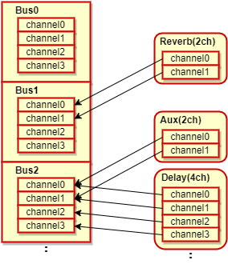
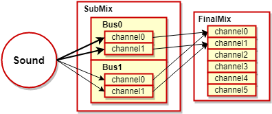
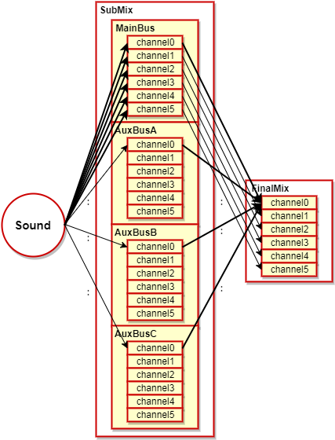
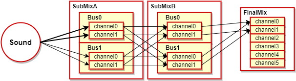
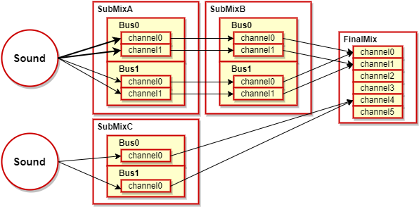

atk における「サブミックス」とは、バスを管理するためのオブジェクトです。
通常、atk ではメイン、AuxBus_A, B, C の 4 つの 6ch バスを使うことができますが、
内部的にはこれらは 1 つのサブミックスにより管理されています。
このサブミックスを、 atk では利用者がカスタマイズすることができます。
これにより、利用者がバスの構成をユースケースに応じて自由に変更できるようになり、
バスの数を増やす、バスのチャンネル数をカスタマイズするなど、より柔軟なバスルーティングを実現することができます。
このページでは、サブミックスとは何か、サブミックスとバスの関係性を説明したのち、 atk が通常どのようなバスルーティングになっているかを説明します。
その後、サブミックスを使用したバスルーティングの設定方法について、説明を行います。
サブミックスのカスタマイズに関する機能は、現在有用性を評価中です。予告なく破壊的な仕様変更が入る可能性がある点にご注意ください。
atk で再生されたサウンドは、エフェクトによる信号処理の適用のためいくつかのバスに出力され
最終的にそれらがミックスされた状態で出力されます。
そのような処理を実現する仕組みのサブミックスについて説明します。
ここでは、サブミックスに関連する用語について説明します。
atk でエフェクトを設定する単位です。
バスは１つ以上のチャンネルから構成されていて、エフェクトを設定する際は
エフェクトの各チャンネルの信号処理を、バスのどのチャンネルに適用するかを設定することができます。

atk でサウンドの再生要求先として指定される対象です。
初期状態では１つのサブミックスで構成されているため、再生時に明示的に指定する必要はありません。
サブミックスは１つ以上のバスから構成されていて、接続先として他のサブミックスやファイナルミックスを持ちます。
接続先には、サブミックス内の全てのバスがミックスされた結果が出力されます。

atk は初期状態では、サブミックスは１つ、バスは MainBus と AuxBus A～C の３つで構成されています。
また各バスは、６つのチャンネルから構成されています。
(参考：SoundMaker マニュアル、ウェーブサウンドのセンドMAINの説明図)

6 チャンネルの各チャンネルに音量を指定してサウンド再生する方法については、
ミックス の「各チャンネルの音量の直接指定」を参照ください。
atk は初期状態で前述のサブミックス構成になっていますが
ユーザ定義のサブミックス構成を利用する事で、サブミックスやバスの数を増減させることができます。
本機能は、現在有用性を評価中です。予告なく破壊的な仕様変更が入る可能性がある点にご注意ください。
サブミックス構成をユーザ定義する事には、以下のような利点があります。
サブミックス構成をユーザ定義することにより
といった構成を変更することができます。
ここでは構成の変更のルールについて説明します。
サブミックスは接続先として、他のサブミックスを指定する事が可能です。
ただし、最終的にサブミックスはファイナルミックスに接続されている必要があります。
サブミックスが最終的にファイナルミックスに接続されていない場合、
そのサブミックスに対してサウンドの再生要求を行っても、そのサウンドの音声は出力されません。

サブミックスは並列に配置する事も可能です。
その場合、複数のサブミックスにまたがるサウンドの制御を１つのサウンドハンドルで行うことはできません。
複数のサブミックスにサウンドを指定する場合は、別々のサウンドハンドルを用意する必要があります。

１つのサブミックスに設定できるチャンネル数の合計の最大は 24 ch です。
例えば、6ch のバス５つを１つのサブミックスに設定する事はできません。
１つのサブミックスにチャンネル数の異なるバスを設定することはできません。
例えば、１つのサブミックスに対して 6ch のバス２つ、2ch のバス２つのような設定を行うことはできません。
ここではサンプルコードを例に挙げながら、プログラム上でユーザ定義のサブミックス構成を利用する手順を説明します。
まずは SoundSystem の初期化時に、ユーザ定義のサブミックス構成の有効化フラグを設定します。
その際、サブミックスが使用するチャンネルの合計数を mixBufferCount に、サブミックスの合計数を subMixCount にそれぞれ設定してください。
nn::atk::SoundSystem::SoundSystemParam param; param.enableCustomSubMix = true; param.subMixTotalChannelCount = totalBusCount * SubMixChannelCount; param.subMixCount = SubMixIndex_Count; |
次に構成したいサブミックスに合わせて、サブミックスのインスタンスを必要な数だけ準備して、初期化を行います。
nn::atk::SubMix g_SubMix[SubMixIndex_Count]; ... // SubMix[A] の初期化 std::size_t memSizeForSubMixA = nn::atk::SubMix::GetRequiredMemorySize( SubMixBusCount[SubMixIndex_A], SubMixChannelCount, SubMixBusCount[SubMixIndex_B], SubMixChannelCount ); g_pMemoryForSubMix[SubMixIndex_A] = nns::atk::Allocate( memSizeForSubMixA ); g_SubMix[SubMixIndex_A].Initialize( SubMixBusCount[SubMixIndex_A], SubMixChannelCount, SubMixBusCount[SubMixIndex_B], SubMixChannelCount, g_pMemoryForSubMix[SubMixIndex_A], memSizeForSubMixA ); ... |
初期化を行ったサブミックスのインスタンスの接続先を設定します。各サブミックスの接続先は最終的にファイナルミックスに接続されるように設定してください。
// SubMix のそれぞれを接続 g_SubMix[SubMixIndex_A].SetDestination( &g_SubMix[SubMixIndex_B] ); g_SubMix[SubMixIndex_B].SetDestination( &finalMix ); g_SubMix[SubMixIndex_C].SetDestination( &finalMix ); // SubMix[B] の各バスから FinalMix のバスへ接続 // ( FinalMix は 1 つのバスしか持ちません ) const int FinalMixBusIndex = 0; for(int busIndex = 0; busIndex < SubMixBusCount[SubMixIndex_B]; busIndex++) { g_SubMix[SubMixIndex_B].SetSend( busIndex, FinalMixBusIndex, 1.0f ); } |
ユーザ定義のサブミックス構成を利用してサウンドを再生する際は、どのサブミックスに対して再生要求を行うかを、SoundStartable::StartInfo で指定する必要があります。
StartInfo::enableFlag に EnableFlagBit_OutputReceiver を設定した上で、StartInfo::pOutputReceiver に再生要求先を指定してください。
OutputReceiver には SubMix か FinalMix を指定することができます。
またエフェクトを設定したい場合は SoundSystem ではなく、追加したいサブミックスやファイナルミックスに対して、バスを指定してエフェクトの追加を行ってください。
// SubMix[B] の AppendEffectBusIndex バスにエフェクトを追加 // バスのセンドの確認に用います。 g_SubMix[SubMixIndex_B].AppendEffect( &g_EffectReverb, AppendEffectBusIndex, g_pMemoryForEffectReverb, memSizeForEffectReverb ); ... // StartInfo に SubMix を指定して再生 nn::atk::SoundArchivePlayer::StartInfo info; info.enableFlag |= nn::atk::SoundArchivePlayer::StartInfo::EnableFlagBit_OutputReceiver; info.pOutputReceiver = &g_SubMix[g_TargetSubMixIndex]; bool result = g_SoundArchivePlayer.StartSound( &g_SoundHandle, soundId, &info ).IsSuccess(); |